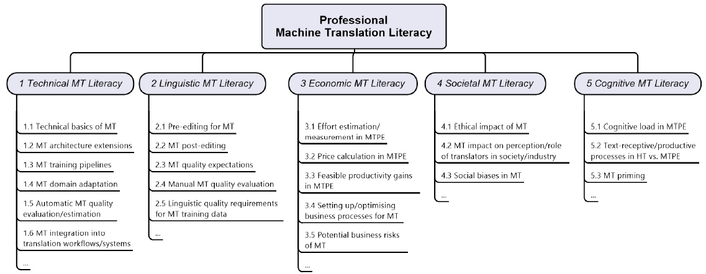
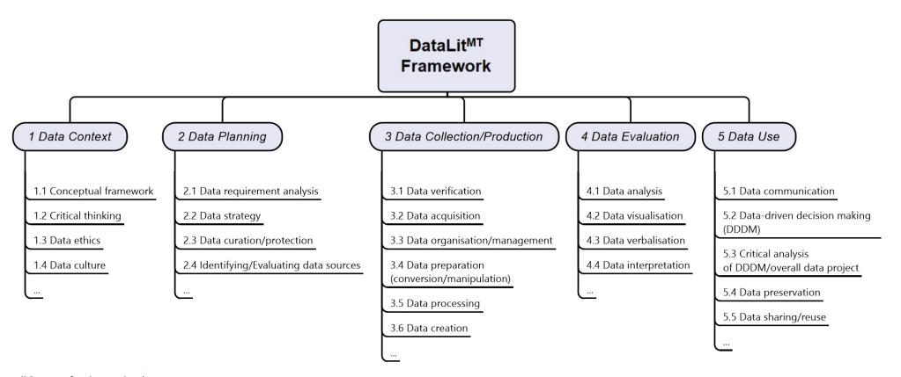

Frameworks
In order to provide internal structure to the two frames of reference of the DataLitMT project, we developed a Professional MT Literacy Framework and an MT-specific data literacy framework. Based on these two frameworks and their interface, we then developed the DataLitMT Competence Matrix, which guided the design of our learning resources. We present the two frameworks in concise form below. An exhaustive discussion of the frameworks can be found in Krüger (2022) and in Krüger/Hackenbuchner (2022).
Professional MT Literacy Framework
The Professional MT Literacy Framework depicted below aims to capture a comprehensive set of MT-related competences that professional translators and other language professionals may require in order to participate successfully in modern MT-assisted translation processes. The Professional MT literacy framework consists of five main dimensions of MT literacy, which are subdivided into individual subdimensions. The framework provides MT-specific application contexts for the DataLitMT Competence Matrix.

The Professional MT Literacy Framework
DataLitMT Framework
The DataLitMT Framework depicted below is an MT-specific data literacy framework that we developed on the basis of a range of existing data literacy frameworks (for more information on these frameworks, see the articles by Krüger 2022 and Krüger/Hackenbuchner 2022 linked above). The DataLitMT Framework covers the full data lifecycle of a typical machine translation project. The framework also provides the descriptive categories for the DataLitMT Competence Matrix.

DataLitMT Framework
Dynamic Mapping between the Frameworks
In order to illustrate various points of contact between the Professional MT Literacy Framework and the DataLitMT Framework, we created an animated graphic, where you can click on the main dimensions of the two frameworks to see how their individual subdimensions are related to the subdimensions of the other framework. The interface between professional MT literacy and data literacy is very important since it illustrates the close interrelation between the two concepts (as stressed by DataLitMT) and guided the development of the DataLitMT Competence Matrix.
Dynamic Mapping between Professional MT Literacy and Data Literacy
A dynamic mapping between the individual subdimensions of the Professional MT Literacy Framework and the DataLitMT Framework